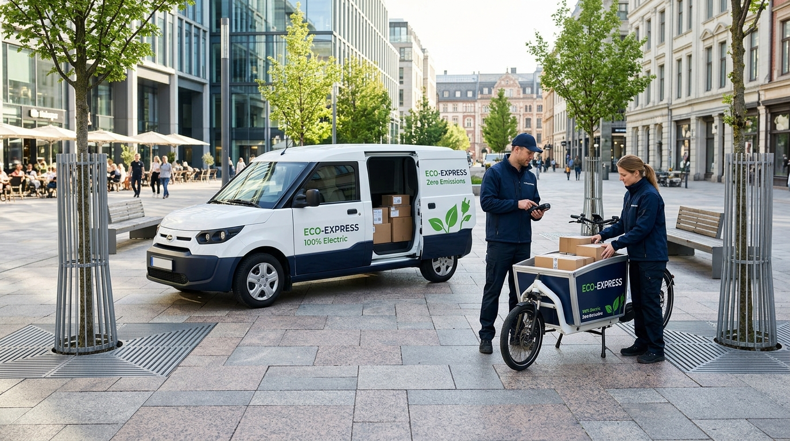
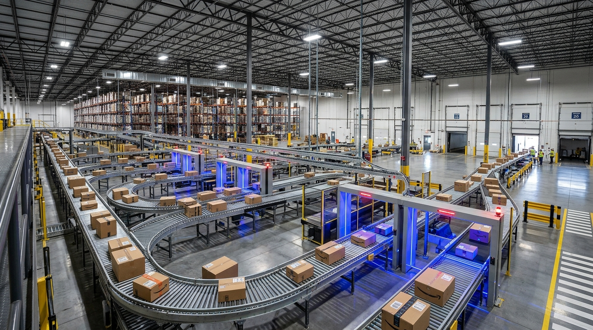
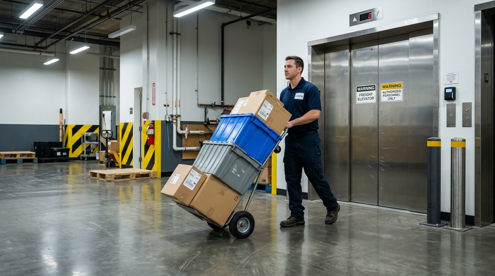
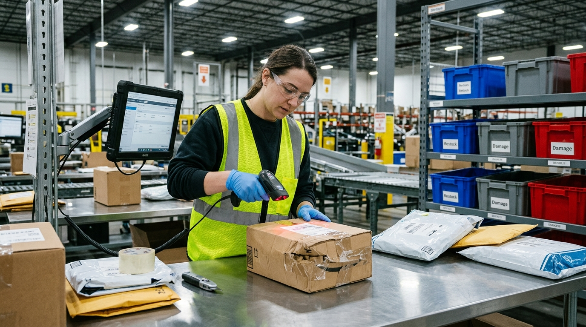
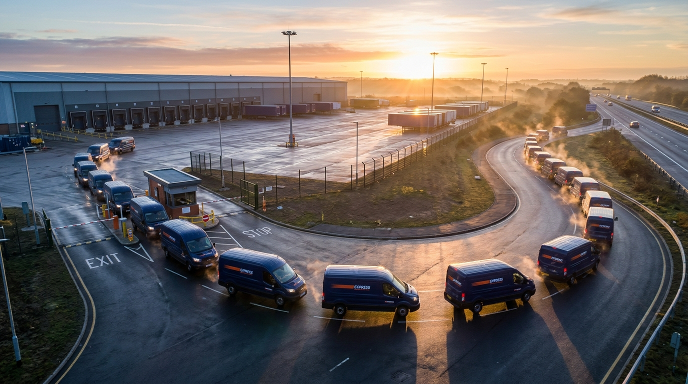

ILLUSTRATIVE DEMO PROJECT
Document Courier
ILLUSTRATIVE DEMO PROJECT
Document Courier
Express Document Delivery Concept
Rapid transit workflow prioritizing zero-stop direct courier transfers and tamper-evident pouch seals for confidential records.
Experience our simulated shipment tracking tool. Enter reference DEMO123456 below to trace a sample parcel across each operational custody checkpoint.
Package delivered to destination address. Verified by receiver signature (Simulated Proof of Delivery).
Assigned to courier delivery van for final-mile route sequence.
Linehaul express corridor transit concluded. Dispatched to regional destination distribution facility.
Barcode scanned through automated high-capacity optical sorter. Volumetric weight logged.
Field courier collected parcel from sender, inspected packaging, and printed initial tracking label.
Demonstration booking initiated online. Courier route dispatch sequence scheduled.
Explore 8 illustrative case studies presenting specialized courier workflows, urban last-mile initiatives, and commercial distribution frameworks.
ILLUSTRATIVE DEMO PROJECT
Document Courier
Rapid transit workflow prioritizing zero-stop direct courier transfers and tamper-evident pouch seals for confidential records.

ILLUSTRATIVE DEMO PROJECT Express DeliveryMetropolitan multi-drop route optimization integrating electric delivery vans and localized staging hubs for retail orders.

ILLUSTRATIVE DEMO PROJECT E-commerceHigh-volume seller intake framework featuring barcode reconciliation, dimensional checks, and multi-carrier sorting cages.

ILLUSTRATIVE DEMO PROJECT Business DeliveryOmnichannel store-to-door customer fulfillment and inter-branch stock balancing with localized last-mile routing.
Scheduled morning and afternoon mailroom sweeps providing secure lockbox container transfers between corporate headquarters.
Heavy carton dispatch operation managing palletized staging, digital manifests, and dedicated carrier linehaul coordination.

ILLUSTRATIVE DEMO PROJECT E-commerceCustomer-centric return pickup model featuring doorstep quality inspection, tamper-evident re-packaging, and swift merchant return.

ILLUSTRATIVE DEMO PROJECT Express DeliverySynchronizing linehaul arrivals at suburban perimeter hubs with multi-drop courier vans for rapid final-mile distribution.
Click on any network node below to inspect custody transfer standards, simulated throughput, and operational role.
Origin point where sender parcel is inspected, weighed, and barcoded by the local courier agent.
Submit parcel details, choose service speeds, and review client-side booking verification.
Book a Pickup
Detailed description of the courier project concept.